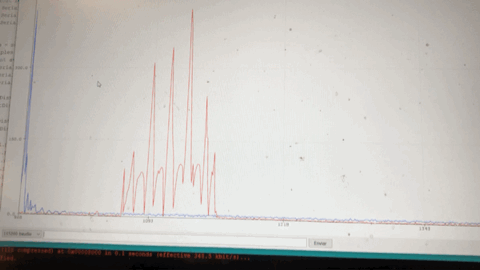 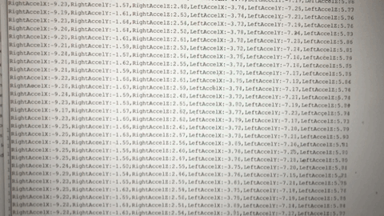
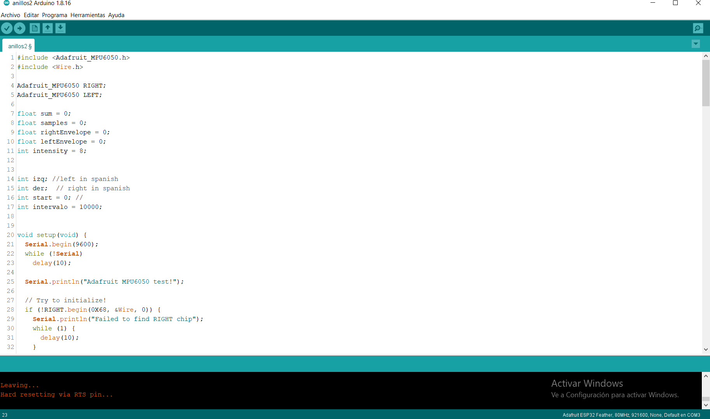 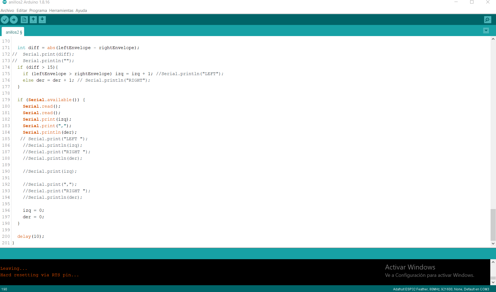
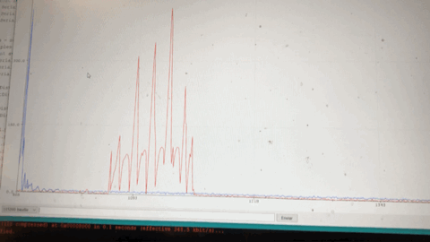 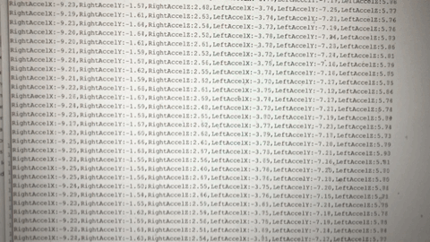
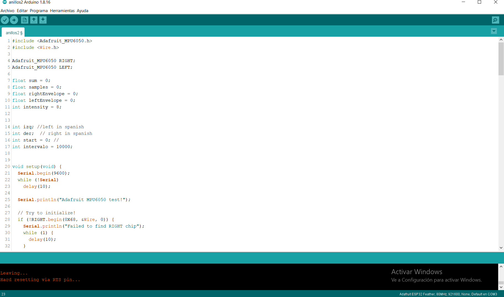 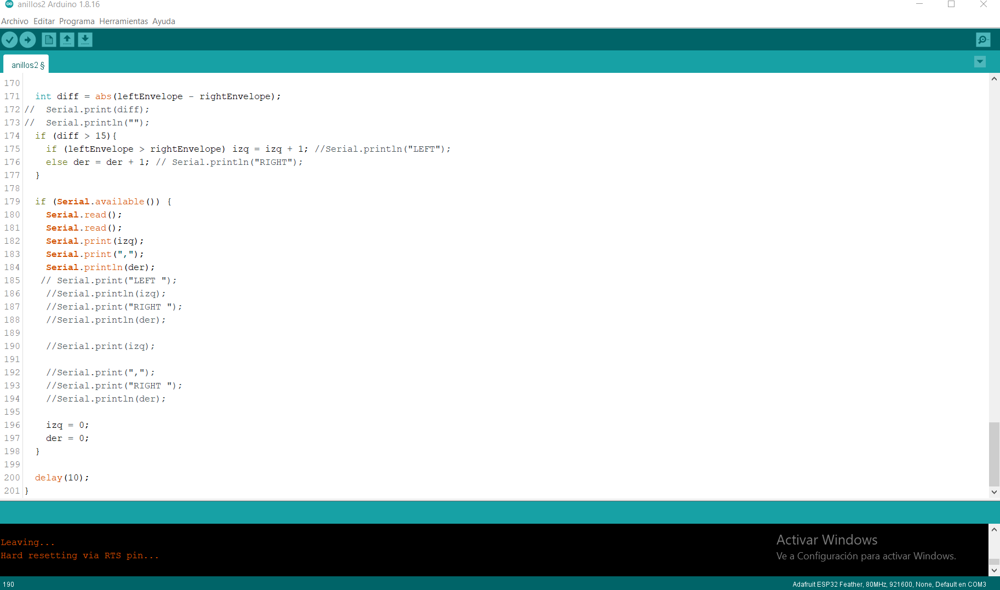

The project is about to speculate if it is possible to transmit/replicate/ reinterpret what people with the spiritual opening can feel without any input - item to activate their senses.
To other people using tech / interfaces.
It is an experience related to the cognitive processes that we provoke when we physically interact with other
beings.
The idea is to generate an interfase between the spiritual, humans, and technology , with an interdisciplinary holistic background that claims for the intelligence of our body using biodecoding as the main tool, among others.
The project is to create a mechanism that read the distance/movements of your hands while you are interacting with another non-human, having a dataset of audios as inputs to stimulate your memories. And to have a reading of these movements to provoke speculations if this types of interfaces can be done in spirituals contexts.
1. Use gyroscop / accelerator sensors MPU5060 to messure the movement.
2. Use Arduino to calibrate the sensors and the signal processing of them.
3. Connect the arduino to P5 to activate the audios and to generate the graphics.
4. 3Dprint rings to put the sensors on it.
5. Test it.
The first to do was to calibrate and check what sensor into the main sensor use. I am just working with the accelerator sensors.
With the accelerator sensor we can have the reading of the real magnitud distance.
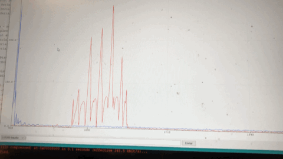 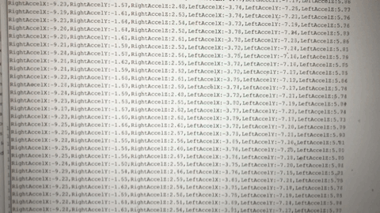
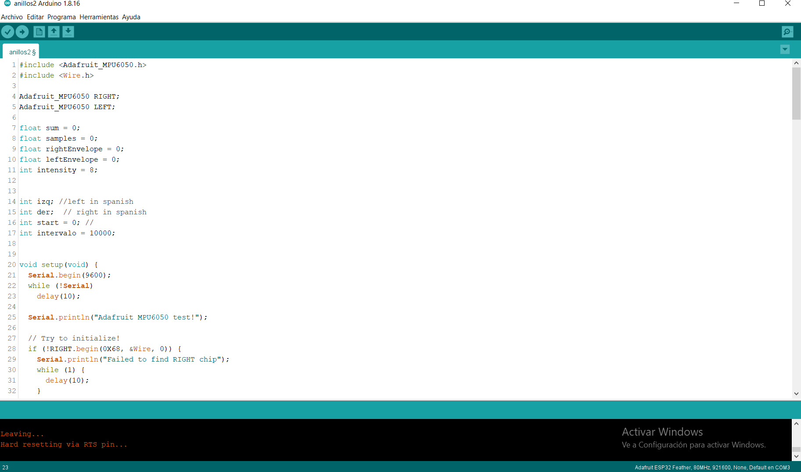 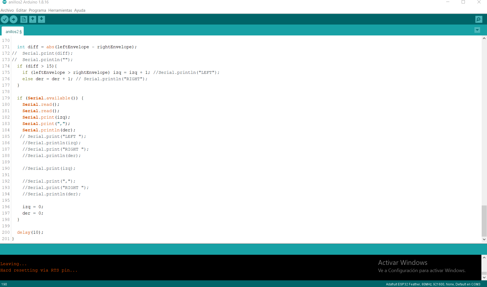
Basically, right and left ring have to contain both sensors. They have to be comfortable enough to allow movement and resizable.
Resizable rings don't work well with PLA.
Accelerator / Gyroscop sensor require calibration and signal processing,
that is not easy if you start learning arduino. (thanks Jeremy and Victor)
The connection with P5 was difficult because of the output audio plus random selection of them.
The audios still not calibrated, to test the running I select short audios.
The interfase in P5 is a first approach output. Probably, is recommendable use other programm.